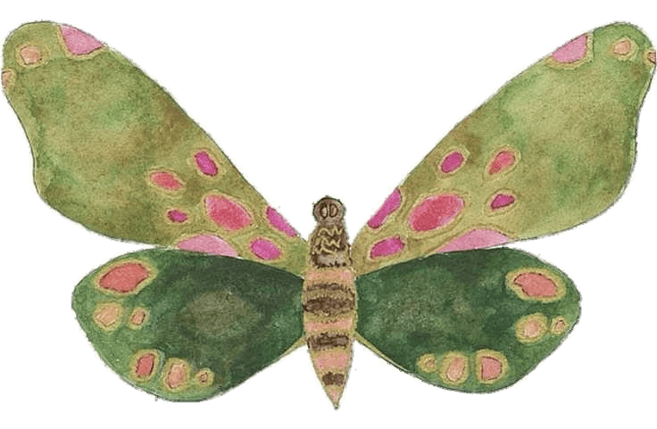
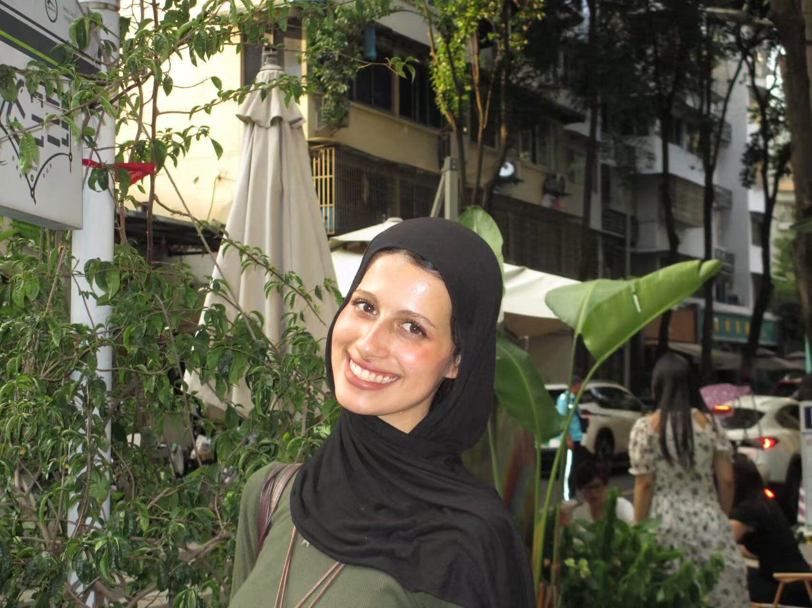
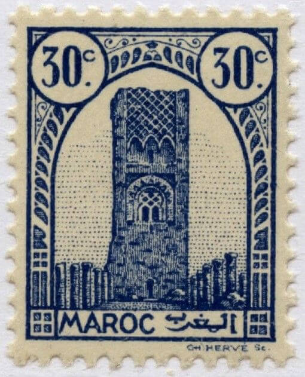
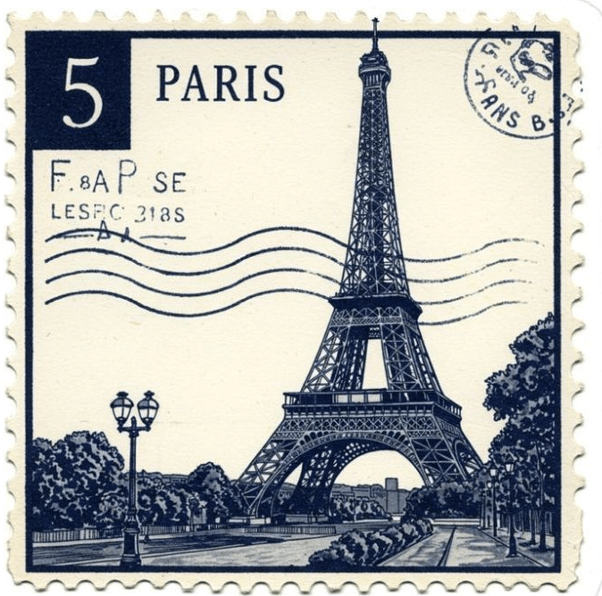
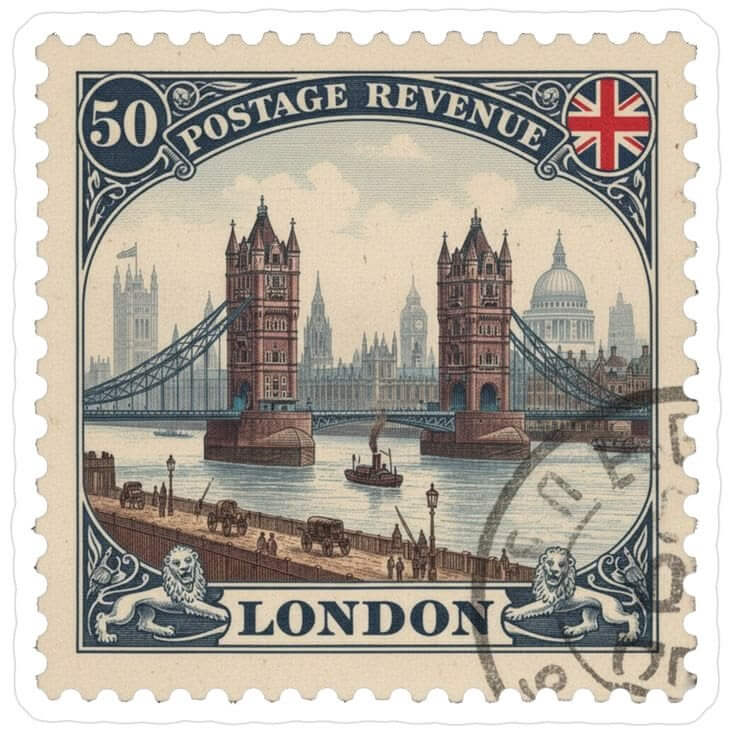
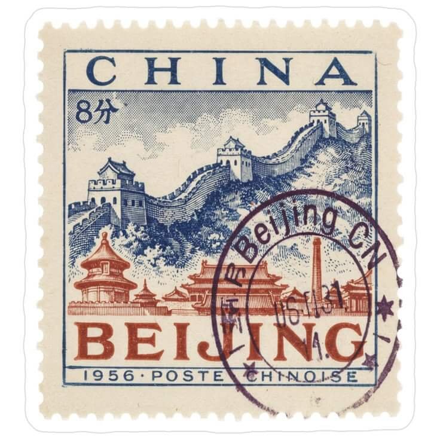

About me

I’m Salma Choukrallah, a Moroccan international student currently based in Chengdu, China, pursuing a Bachelor’s degree in Software Engineering at Sichuan University through the Belt and Road Scholarship. As a third-year student, I’m gradually turning what I learn in the classroom into practical skills, personal projects, and a clearer vision of the kind of developer I want to become.
Moving to China has shaped my experience far beyond academics. It has taught me independence, adaptability, and the value of approaching unfamiliar environments with curiosity. From navigating a new language and culture to discovering new places and meeting people from different backgrounds, these experiences have become an important part of how I see the world.
\\My interests lie in the intersection of technology, creativity, and problem-solving. I enjoy exploring web development, working with Python and JavaScript, and bringing ideas to life through code. I’m particularly drawn to the visual and interactive side of technology, where thoughtful design and functionality come together to create meaningful digital experiences. I’m also interested in exploring how emerging technologies, including AI, can shape the future of software. Outside university, I enjoy reading, music, photography, design, and travelling whenever I get the chance. I’m naturally curious about different cultures, creative ideas, and the small details that make everyday experiences interesting. This website brings together the things I’m learning, building, and discovering along the way. It’s a reflection of my journey so far—and a space to document what comes next.
Words I live in
Languages
Four tongues, one messy beautiful brain

01Arabic
mother tongue
"كيف داير؟"
how are you?
Native
02French
the second language
"ça va aller"
it's going to be okay

03English
the one I dream in
"still learning"
always

04Chinese
the newest one
"还可以"
it's alright